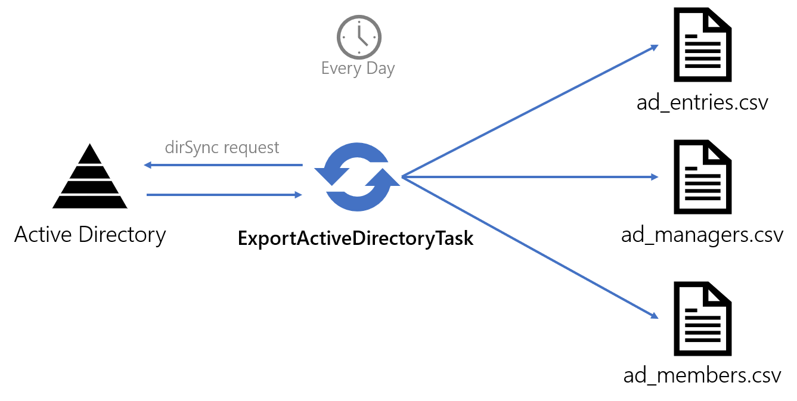
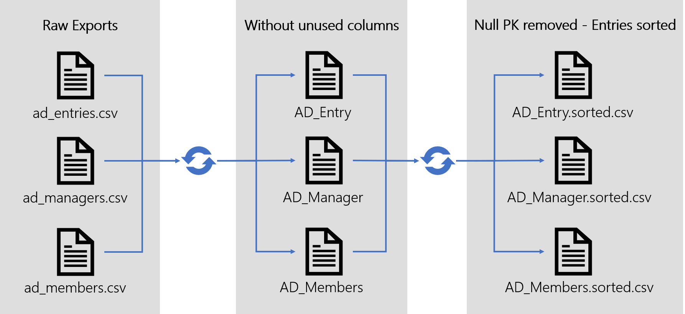

Upward Data Synchronization
Upward Data Synchronization (Sync Up) is the process that copies relevant managed systems data into Identity Manager's resource repository and translates them into resources that match the configured Entity Model. See the Entity Model topic for additional information.
Performing a Sync Up allows the user to:
- integrate the managed systems state with Identity Manager. The copied data serves as the basis for the assignment computation;
- check that previously edited provisioning orders have been accurately executed;
- ascertains differences between the real managed system state and the Assignment Policy theoretical state.
Overview
A scheduled sync up per managed system
Sync Up is performed regularly, at least every day, as a set of Tasks & Jobs .
A Sync Up is planned for every managed system that interact with Identity Manager.
A Sync Up is associated with a Connectors.
Three sync up mode
Identity Manager provides three distinct synchronization algorithms:
-
incremental
-
complete
-
initial
Complete is most straightforward one. A completeSync Up loads the managed systems' data into Identity Manager as-is, replacing entirely the currently held data.
As it involves sending large amounts of data over HTTP between Agent and Server, complete execution time can be quite large.
To improve the Sync Up execution time, Identity Manager provides the incremental mode. This mode only considers changes made to the managed systems since the last Sync Up. Those are applied to the Identity Manager's database. Only changes are sent through the network, instead of whole data files, which allows the Sync Up execution time to be greatly reduced.
Changes are computed either by the managed system itself, given such capabilities are available, or by a Identity Manager's Agent.
However, the incremental mode cannot be 100% reliable for two reasons.
First, it relies on external inputs that are not directly controlled by Identity Manager. Second, it only exports changes based on the managed system state, not on Identity Manager's database state.
External perturbations could cause slight differences between the database's state and the managed systems'. Order can be restored by running a complete Sync Up regularly. A complete Sync Up ensures the database is in a stable state, faithfully reflecting the managed system state, before resuming the incremental Sync Up iterations.
Safeguards are also implemented to avoid accidental overwrites, that would be caused by an empty or incomplete input.
Finally, the initialSync Up is designed to be used the first time a managed system connects to Identity Manager. Just as the complete, it loads the data as a whole. But, unlike the complete, it does not overwrites the currently held data and does not provide any safeguard. The initial mode provides a quick way to perform the first Sync Up. The trade-off is security: initialSync Up should only be used the first time a managed system connected to Identity Manager and the database is empty, as far as this connector is concerned. Launching the Initial Sync Up twice would actually load the same data twice whereas launching the complete twice would have the same effect as launching the complete once.
An ETL process
Sync Up is organized as an Extract, Transform, Load process. It's composed of three steps: export, prepare-synchronization, and synchronization.
Export
The Export is the first step of the Sync Up.
During this step, data is extracted from the managed system and generates CSV files containing the managed system's raw data. The output of this process is called the CSV source files. They are written to the Application Settings export directory waiting to be used by the next-in-line prepare-synchronization task.
The Export occurs Agent-side.
Native support or custom process
Depending on the managed systems capabilities, an Export step can be performed by one of Identity Manager's native tasks or by custom scripts.
Using native process
Identity Manager's Connectors provide native Export tasks for the most common managed systems. Active Directory, SAP, or SharePoint are examples of natively supported managed systems. The output CSV source files format is described in the Connectors section together with an exhaustive list of supported source managed systems.
Connectorsare Identity Manager's link to the managed system. They provide configurable export and fulfill capabilities that can be used by Identity Manager as-is without any further development.
Using a custom process
Exporting data from a managed system without a native Identity Manager process is still possible by writing a custom Export process.
If the managed system has built-in export capabilities, Identity Manager can simply rely on exports scheduled by the source managed system. Regularly, the managed system generates reports, in whatever format. A custom task, such as a Invoke Expression Task , can then be used to retrieve the generated exports, adapt them to the CSV source files format expected by Identity Manager and copy them to the Application Settings export directory. The whole can be scheduled and orchestrated by a Jobs .
For example, a common scenario is to configure an HR management system to perform daily extracts of its data to CSV files for the Agent to find. This usually can be set up without any Identity Manager's task, just by using the managed system and the organization's network capabilities.
If the managed system does not provide built-in export features but provides an API or an exposed database, it's possible to write a custom export process based on that API or direct requests to the managed system's database. This process can then be used as an export task wrapped in a Invoke Expression Task or an Invoke Sql Command Task . See the Invoke Expression Task topic for additional information. Any Windows process that can be called from a PowerShell script and generate a CSV file can serve as an export process.
How to choose the custom CSV source file format ? It's best to keep it simple and stick as closely as possible to the managed system data model. Data cleansing and translation to the resource repository's Entity Model is handled later in the Sync Up process. There is no need to try and optimize the CSV source file format in a custom script. It's best to keep it close to the managed system to be able to spot early export errors.
Export tasks output
The format of the exported CSV Source files depends on the chosen Sync Up mode and on the used export task. Nonetheless, there are a few criteria that prepare-synchronization expects to find in those files.
First, it must be a CSV format. One line per entry, and every attribute as a column.
Then, there is a slight difference between Complete/Initial and Incremental export.
With the Complete and Initial modes, CSV source files contain an exact extract of the managed system's data as a list of entries. At this point, the Entity Model is not yet involved. Every line of the CSV source file mirrors a line in the source managed system database.
With Incremental mode, if the source managed system is able, one more column is added. It contains a ADD, UPDATE, or DELETE instruction. Incremental export generates a list of changes made on the managed system since the last export, instead of an exact mirror of the data. Active Directory and Microsoft Entra ID (formerly Microsoft Azure AD), for example, are able to produce such exports, as LDIF files, that the Active Directory connector translates into resources changes. Identity Manager's native support for ServiceNow and SCIM also provides such capabilities.
In case the source managed system does not possess incremental export capabilities, the changes computation is performed during the prepare-synchronization step.
Inside those constraints, every natively supported export task generates its own CSV source file format, described in the Connectors section. Usually, two kinds of files are generated: entries, describing plain entries, and associations, describing associations between entries.
All CSV source files are written to the Application Settings export directory.
At the end of the export step, the Upward Data Synchronization contains several files per connectors, that will be translated into resources during prepare-synchronization and synchronization steps thanks to Entity Mapping (see below).
The Application Settings export directory can also contain opaque cookie files used for incremental export of a few systems such as Active Directory, Microsoft Entra ID, ServiceNow, and SCIM.
The reader might now understand how, as laid out in the overview, the input data could be unreliable given the volatile nature of the managed system export methods. Complete and incremental modes work together to find the best compromise between reliability and execution time.
Example
The following example demonstrates the native Active Directory export process.
Exporting data from an Active Directory can be achieved by using the Export Task task within a Job.
The Tasks requests from the source Active Directory all entries that match a configured filter. It outputs a set of CSV source files, containing raw AD Entries data (ad_entries.csv), information about group membership (ad_members.csv) and about the hierarchical organization (ad_managers.csv).

ad_entries.csv contains raw AD entry data.
employeeID;businessCategory;extensionAttribute15;objectCategory;sAMAccountName;userPrincipalName;parentdn
00001;fames;ac;turpis;egestas;integer;eget
00002;ullamcorper;eget;nulla;facilisi;etiam
00003;integer;eget;aliquet;nibh;praesent
ad_managers.csv contains a list of associations, representing the link between an employee (employeeId column) and their manager (manager column).
employeeID;manager
00001,99812
00002,99812
00003,99812
ad_members.csv contains also a list of associations, representing the link between a group (identified by its dn) and its members (the member column).
dn;member
CN=SG_APP_AG002,DC=internal;CN=U34811,DC=internal
CN=SG_APP_AG002,DC=internal;CN=U18184,DC=internal
CN=SG_APP_AG002,DC=internal;CN=U43405,DC=internal
CN=SG_APP_AG002,DC=internal;CN=U51630,DC=internal
Entity Mapping
The aim of the Sync Up is to load managed systems' data into the resource repository. As such, it requires Identity Manager to translate data from the managed system format (or, more accurately, the export task's output format) into the resource repository format, that is, the Entity Model.
The translation rules are described in the applicative configuration by Entity Type Mapping and Entity Association Mapping elements.
Entity Type Mapping elements map the resources CSV source files columns to Entity Model properties. Each mapping also identifies one column as the primary key for this Entity Type. The primary key is used to uniquely identify a resource in the Sync Up process. It's mandatory to be able to perform incrementalSync Up, as it allows to identify a resource on which an update or a delete has to be performed.
Entity Association Mapping elements translate the CSV source files into Entity Model. They describe rules identifying associations between resources loaded thanks to the Entity Type Mapping .
Prepare Synchro
Prepare-Synchronization is the second step of the Sync Up. It transforms the CSV source files further, before the Synchronization step.
It performs data cleansing and, in incremental mode, computes changes made on the source managed system since the last Prepare-Synchronization.
It's performed on the Agent-side.
Data cleansing
The following actions are performed on the CSV source files.
- Removing columns that are not used in Entity Type Mapping or Entity Association Mapping
- Entries that have a null primary key
- Removing duplicates
- Sorting entries according to the primary key
The result of the Prepare-Synchronization is stored in the Application Settings export directory as three files:
For every entity type of the relevant Connector involved in an
Entity Type Mapping
or an
Entity Association Mapping
<EntityAssociationMapping> , a .sorted.csv file is generated, containing the final, cleaned, sorted result.
Duplicates are kept in a separate .duplicates.csv file.
Null primary key entries are kept in a separate .nullpk.csv file.
Computing changes
In incremental mode, changes might need to be computed by the Agent.
If the export step has provided computed changes, no further process is required. The changes will be sent as-is to the server.
If the export step has provided a full extract of the managed systems, the prepare-synchronization step computes changes. This computation is based on the result of the last data cleansing, generated by the previous prepare-synchronization, and stored in the previous folder in the Application Settings export directory.
For incremental mode, it is recommended to use managed systems to compute changes when possible. Dedicated workstations and knowledge of the inner data organization allow managed systems to compute changes with a performance that Identity Manager can't match. Also, using managed systems for these operations avoid generating heavy files and alleviate Identity Manager's processing load.
The result is a set of clean lists of changes stored as .sorted.delta file containing a command column.
The command column can take the following values: insert, update, delete, and merge. These are instructions for the synchronization step to apply the changes to the database.
The .sorted file (the original cleaned export file, not the changes) is stored in the previous folder inside the
Upward Data Synchronization
. It will be used as a reference for the next incrementalprepare-synchronization to compute the changes if needed.
Tampering with the previous folder content would result in false changes in order to be computed and result in data corruption in the Identity Manager database. To restore the Identity Manager database to a state faithful to the managed system, a completeSync Up would be required.
Preparing the server
At the beginning of every prepare-synchronization process, the Server is notified via HTTP.
Upon receiving the notification, the server creates a directory on its host environment, identified by a unique GUID, to contain .sorted or .sorted.delta files that will be sent by the agent.
This aims to prevent network errors that would cause an incremental database update to happen more than once.
That means several export and Prepare-Synchronization tasks can be executed simultaneously, they will be processed by the server one at a time in the right order.
Of course, any notification of a completePrepare-Synchronization would cancel the previous non-processed incremental ones. As a complete reloads the whole database, it renders incremental changes computation moot.
Sending clean exports
.sorted or .sorted.delta files are sent over HTTP to the Server for the last step.
Prepare synchronization tasks
- Prepare Synchronization Task is the standard prepare-synchronization task.
- PrepareSynchronization Change Task is used to process data source files containing changes.
- PrepareSynchronization ActiveDirectory Task is specialized for Active Directory. This task handles Active Directory incremental prepare-synchronization by using Active Directory cookies.
Example
The following illustration models the complete prepare-synchronization steps applied to an Active Directory export. The matching Connector defines an Entity Type AD Entry and two associations: members and manager.

Synchro
Synchronization is the last step. It loads data into the resource repository from cleaned CSV source files. It's performed Server-side.
Translating
Before writing to the Identity Manager's database, the Server uses Entity Type Mapping and Entity Association Mapping to translate CSV source files into Entity Model compliant resources and resolve association links.
Tables
The Synchronization step involves four tables from Identity Manager's database.
-
UR_Resources contains the actual resources.
-
Mono-valued associations ( target column index 128 to 137 included ) are stored in UR_Resources as well,
-
Multi-valued associations ( target column index null or -1 or 0 to 127 included ) are stored in the UR_ResourceLinks table.
-
UR_ResourcesChanges and UR_ResourceLinkChanges are intermediary tables, used by the complete mode as an extra step before committing changes to the UR_Resources and UR_ResourceLinks in the context of a safeguard mechanism.
Complete
Completesynchronization starts with a .sorted.csv file that contains cleaned data, as in whole data, not mere changes.
Complete synchronization replaces entirely the database resources. That means that all resource, for that Connector , that are in the database but not in the CSV source files will be deleted. That means no change made to the database from outside of the connectors or the UI are persistent.
Complete synchronization does not blindly insert data into Identity Manager database. Its aim is to update Identity Manager database to match the .sorted files received.
To do so, .sorted files are translated into resources. Then, .sorted resources are compared against the currently hold database resources, matching Primary Key to Primary Key, to find differences.
That means that, just as the incremental mode, the complete mode will actually apply changes to the database. The difference being that the complete synchronization computes the changes on the Server and the incremental computation computes the changes on the Agent or the managed system. Hence, complete synchronization has to send large data files over the network and is slower.
Safeguard
Before actually updating the database, the number of changes to be applied to the database to match the .sorted resources is compared to a user-defined threshold.
The threshold is a percentage of the total number of stored resources. If the number of changes goes over the threshold, the synchronization is blocked. This safeguard aims at detecting human or system errors that could corrupt Identity Manager's database. For example, a number of delete commands greater than the threshold could be caused by an accidental empty CSV source file being fed to the synchronization.
For this purpose, changes are applied to an intermediary safeguard set of tables, UR_ResourcesChanges and UR_ResourceLinkChanges. The threshold is checked, and if validated, changes are applied to the UR_Resources and UR_ResourceLinks tables.
Initial
Initial synchronization loads the translated resources directly into the database, using INSERT SQL commands. There is no threshold checking, no comparing the data to insert to the currently held data to find differences. It should only be used on a managed system for which Identity Manager does not hold any resources yet.
Incremental
The incremental mode uses a .sorted.delta file that contains changes.
Thresholds are checked just as with the complete, using intermediary UR_ResourcesChanges and UR_ResourceLinkChanges. tables.
Then, changes according to the command column are applied to UR_Resources and UR_ResourceLinks.
Synchronization tasks
- Synchronize Task is the standard synchronization task.
- SynchronizeChanges Task is used to handle changes together with PrepareSynchronization Change Task.
- SynchronizeActive Directory Task is specialized for Active Directory. To be used with PrepareSynchronizationActiveDirectory Task.
Example
This example illustrates the complete loading of Active Directory .sorted files into Identity Manager database.
Handling Errors
The syncro step is where potential errors laid out in the overview could impact the database.
-
The
previousfolder content could be tampered with; -
Managed systems limitations, or human error in the export step, could result in a wrong or incomplete CSV source file being fed to the Synchronization;
-
Identity Manager database could be restored to an older state to try and fix hardware failure or SQL tests gone wrong.
These events, although exceptional, occur. They cause Identity Manager's database and the managed systems to be slightly off one another. The incrementalSync Up cannot fix these differences because the database is not taken into account in the changes computation. The completeSync Up can fix it because it compares directly the database against the export output files, i.e. it relies on the managed system's state, not on the database state.
It is hence recommended to run at least a daily complete synchronization to account for these exceptional events and quickly fix the errors they might have cause into the database.
Remember that incremental and complete Sync Up modes use safeguards to avoid accidental overwrites. That means any error that could find its way into the database would be small.
Incremental mode also offers another optimization that will be described in the Evaluate Policy section. Trade-offs of that optimization can also be counterbalanced by running a daily complete synchronization.
Thresholds
A introduced earlier, to mitigate the risk of data loss in the case of abnormal data source files, the synchronization Job is locked if the number of changes to apply goes over a specific threshold.
Thresholds can be configured by the user in the applicative configuration and be specific to a
Connector
, an
Entity Type Mapping
and/or an
Entity Association Mapping
. They are expressed as number of lines (ex: MaximumInsertedLines) or as a rate (ex: MaxPercentageDeletedLines).
A synchronization task locked by a threshold can be unlocked by executing the Synchronization Validation task.
Thresholds are ignored in initial mode.
The task's argument -force can be used to ignore thresholds.
Next, a word about the Assignment Policy .